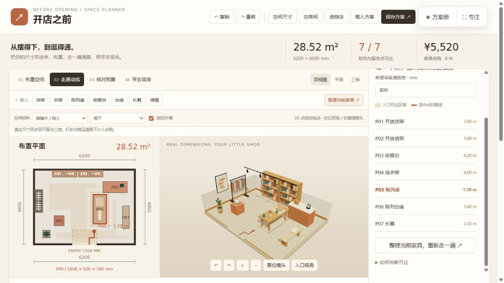
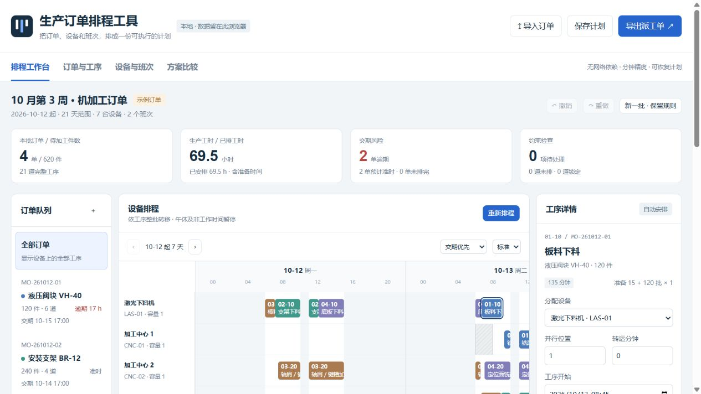
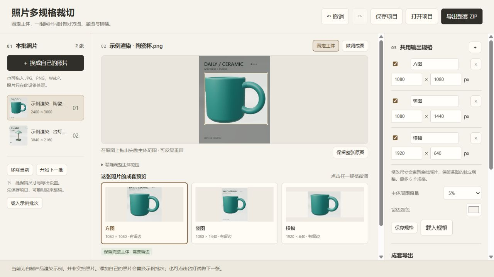
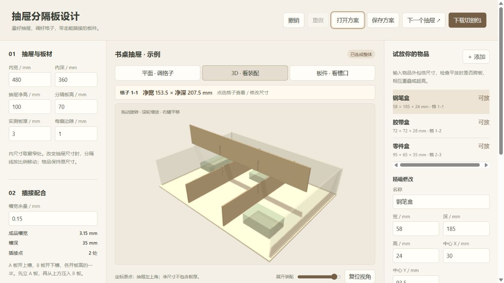
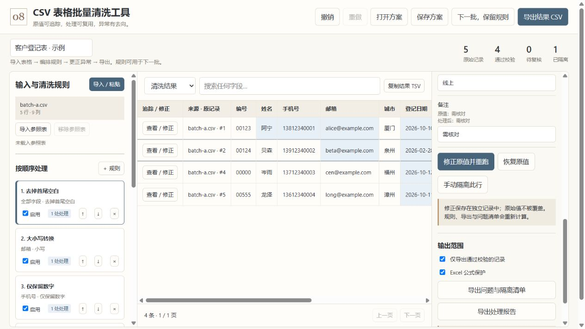
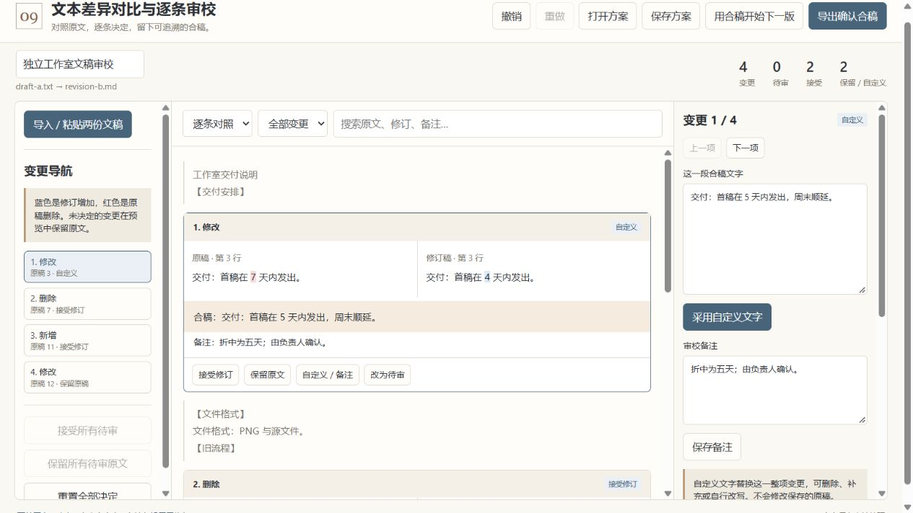
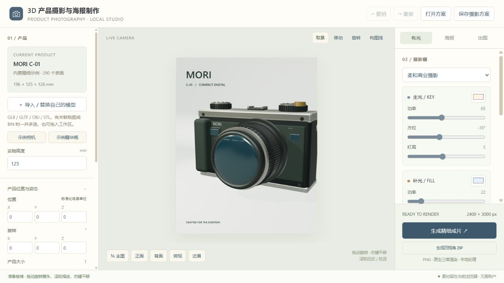
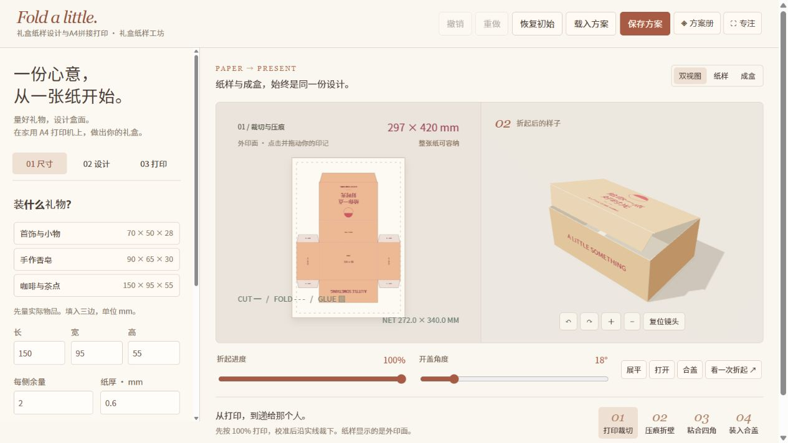
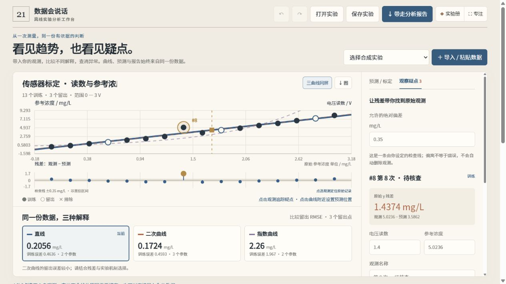
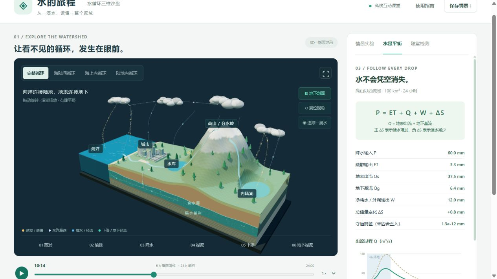

把想象，做成作品。
直接看用途，带入自己的材料，完成任务，再快速开始下一件。
下载后打开作品，即可使用自己的内容继续创作。30 件独立 HTML
THE COMPLETE COLLECTION
不同的想法，
有不同的形状。
所有图片来自作品实际绘制。
所有作品都可以独立打开。
每件都附有制作提示词、说明与边界。
打开一个作品，从默认方案开始，也可以换成自己的内容。
30 件作品机械装配与爆炸图编辑器
导入自己的零件，编辑装配关系、爆炸向量与拆装步骤，输出资料图、零件清单和说明。

02↗生产订单排程工具
带入订单与工艺路线，按设备、班次和前置约束排程，修复冲突、比较交期并导出派工。

03↗照片多规格裁切
圈定主体，联动生成多种比例，逐图微调并成套导出；换下一批沿用规格。
 04↗
04↗陶器3D器形设计工具
捏口、推腹、查看内腔，把器形带走。

05↗抽屉分隔板设计
调整净格与板厚，联动插接槽口和装配，检查物品适配，导出1:1切割图与板件清单。
 06↗
06↗反射光路设计与目标测试
调整有限圆镜，让真实反射光线抵达靶面。
 07↗
07↗交通信号配时与排队对比
改变绿灯份额，用相同到达流比较等待代价。

08↗CSV表格批量清洗工具
导入多份 CSV，编排清洗规则，追踪并修正异常，导出结果，复用规则处理下一批。

09↗文本差异对比与逐条审校
导入两份文稿，逐条接受、保留或自定义变更，留下审校记录与确认合稿，承接下一版。

10↗3D产品摄影与海报制作
导入商品模型与标识，调整材质、布光和镜头，制作高分辨率产品照片、海报与多视角图片。
店铺空间布置与动线规划
带入房间尺寸，布置家具，检查入口通路与预算，带走现场布置单。

12↗礼盒纸样设计与A4拼接打印
输入礼物尺寸与自己的图形，预览折盒，生成实际尺寸的 A4 拼接纸样。
 13↗
13↗书架设计与板材排料
设计书架、展开板件，考虑锯缝与木纹生成下料单。
 14↗
14↗阳台种植布局与养护计划
布置种植箱、核算土量与株数，导出养护日历。
 15↗
15↗备餐时间倒排与购物清单
从上桌时间倒排动作，把人手、设备和购物一起安排。
 16↗
16↗教案编排与课堂计时分组
编排教案、控制现场计时、处理名单与分组。
 17↗
17↗3D分镜与机位预演
布置人物和道具，调整机位焦距，输出真实分镜接触表。
 18↗
18↗访谈摘录整理与主题分析
从原始访谈到主题墙，让每条摘录与结论有迹可循。
 19↗
19↗行李与物品3D装箱规划
用实测物品尺寸排箱，检查重叠、边界和计划总重。
 20↗
20↗本地音频剪辑与混音
导入短音频，裁切、分割、淡化与混音，导出真实 WAV。

21↗数据拟合比较与反向标定
粘贴自己的表格，比较三种模型，追踪异常，完成预测与反向标定。
 22↗
22↗优化算法迭代对比
比较梯度下降、动量与 Adam，观察曲面上的真实迭代。
 23↗
23↗轨道转移计算与3D演示
计算理想霍曼转移，让位置随计算时间而变化。
 24↗
24↗直流电路与RC暂态仿真
编辑元件与节点，计算直流和 RC 暂态并输出结果。

25↗水循环三维沙盘
观察海洋到内陆湖的地上地下循环，对照城市与海绵城市，核对水量平衡并完成随堂检测。
 26↗
26↗地图投影与球面路线对比
在球面与平面间对照路线、距离和投影变形。
 27↗
27↗网络拓扑与数据包仿真
搭建拓扑，改变带宽与队列，追踪包的等待、转发和丢失。
 28↗
28↗图像DCT压缩与误差分析
导入图片，检查 DCT 与量化，导出并解码 PX8 文件。
 29↗
29↗小型Transformer训练与注意力观察
在短语料上训练小型 Transformer，查看注意力并保存训练状态。
 30↗
30↗本地文档检索与证据评测
用自己的资料比较 BM25 与 TF-IDF，评测检索并导出证据提示词。
没有匹配的作品，请调整搜索。